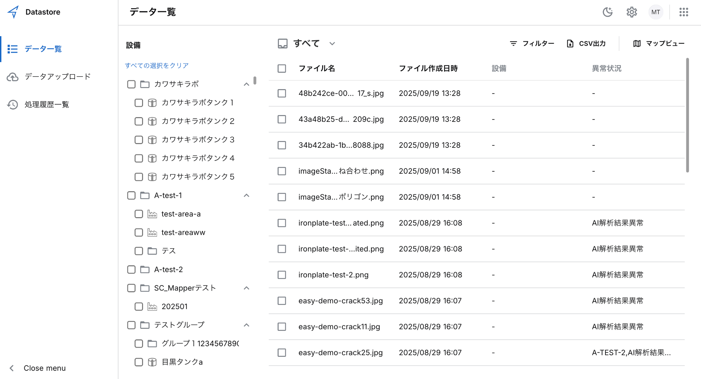
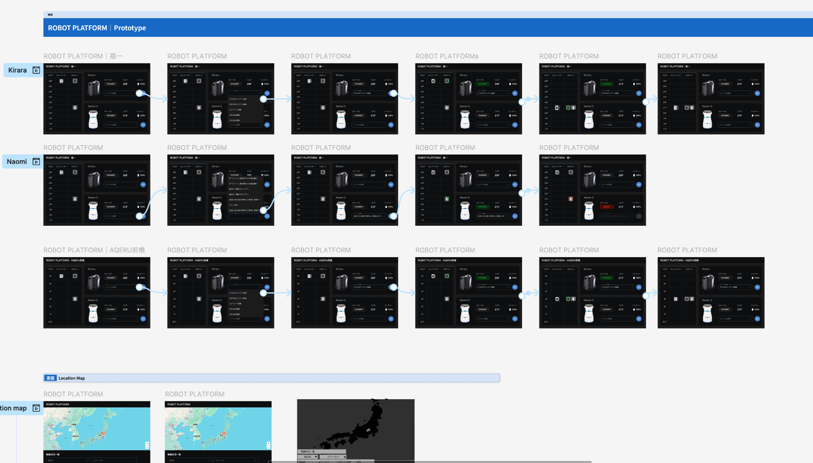
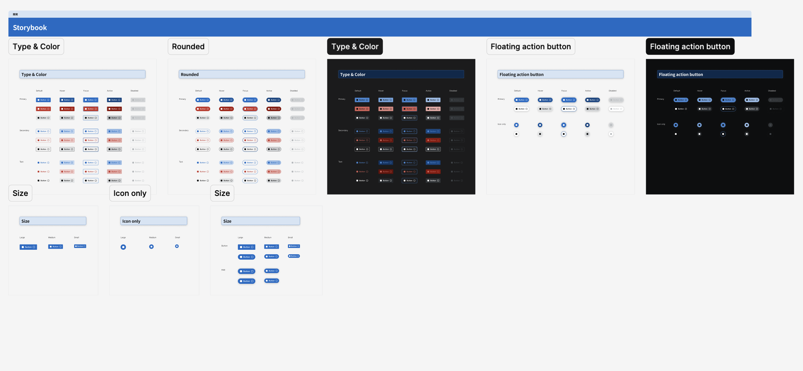
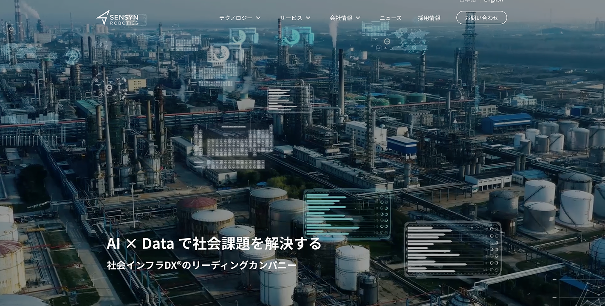

Understand the task
Turn requirements and real usage scenarios into flows and interfaces.
UI/UX designer · Design engineer · Japanese-fluent
Hi, I’m Mya Thet Chel. I’m a UI/UX designer and design engineer with 7+ years across product interfaces, design systems, front-end development, and web operations in Japan. I move between Figma and code to clarify complex tasks, make reusable patterns, and help teams bring ideas to launch.
Based in the New York City area · Open to US opportunities
fly anywhere in this hero ✦
What I bring
Turn requirements and real usage scenarios into flows and interfaces.
Connect Figma patterns to components and Storybook guidance that designers and engineers can share.
Build responsive pages, review implementation, and support publishing and ongoing website work.
Selected work
Two product stories show how I shape workflows. The design system and web work show how I carry decisions into delivery.

Product design / SENSYN ROBOTICS
From drone inspection media to maintenance decisions.
Teams review photos and videos, note areas needing repair, and add inspection workflows. I worked from requirements and user flows through Figma reviews, engineer discussions, and staging checks.

Product design / SENSYN ROBOTICS
A clear control view for hotel robot operations.
Staff needed to see a robot’s floor and status, then send a cleaning command. With limited time and budget, I simplified the interface and coordinated priorities and releases with engineers.

03 / Design engineering
Reusable Figma patterns, Vuetify customization, and Storybook components helped align design and front-end work.

04 / Web design & development
Responsive layouts, coding, HubSpot publishing, and maintenance across corporate pages and product launches.
Work experience
My work moved from web production into product UI and design systems, while keeping hands-on implementation close.
SENSYN ROBOTICS · Japan
A drone, data, and AI company working on infrastructure and facility inspection.
Mapped scenarios and flows, designed Datastore and Robot Platform interfaces in Figma, reviewed with stakeholders and engineers, and checked staging builds.
Created reusable Figma patterns and implemented components with Vue, Vuetify, TypeScript, SCSS, and Storybook.
Designed, coded, published, and maintained corporate and product pages, including responsive and HubSpot work.
NEXTERA · Japan
Designed and built responsive websites and landing pages, supporting updates, testing, and releases.
ITAMIARTS · Japan
Turned designs into responsive HTML, CSS, and JavaScript and handled ongoing production work.
ITAMIARTS · Myanmar
Started in analytical and visual work, building a foundation in precision and cross-office communication.
My way of working
tsunagu · to connect
I connect what people need, what designers decide, and what engineers can deliver.
That means clarifying scenarios, shaping the flow in Figma, working through scope and release tradeoffs, and reviewing the interface in staging. When a pattern should be shared, I carry it into components and documentation.
Requirements, users, and scenarios.
Information structure, Figma UI, and reviews.
Components, feasibility, and release priorities.
Staging UX, fixes, and production quality.
Tools & languages
Figma · Wireframes · User flows · UI design · Adobe XD
Storybook · Vue · Vuetify · TypeScript · SCSS · HTML · CSS · JavaScript
Wordpress, HubSpot · Responsive web · Japanese-language teams · Design review · Releases
Japanese Fluent
English Professional
Burmese Native
Education B.A. in Japanese · Yangon University of Foreign Languages